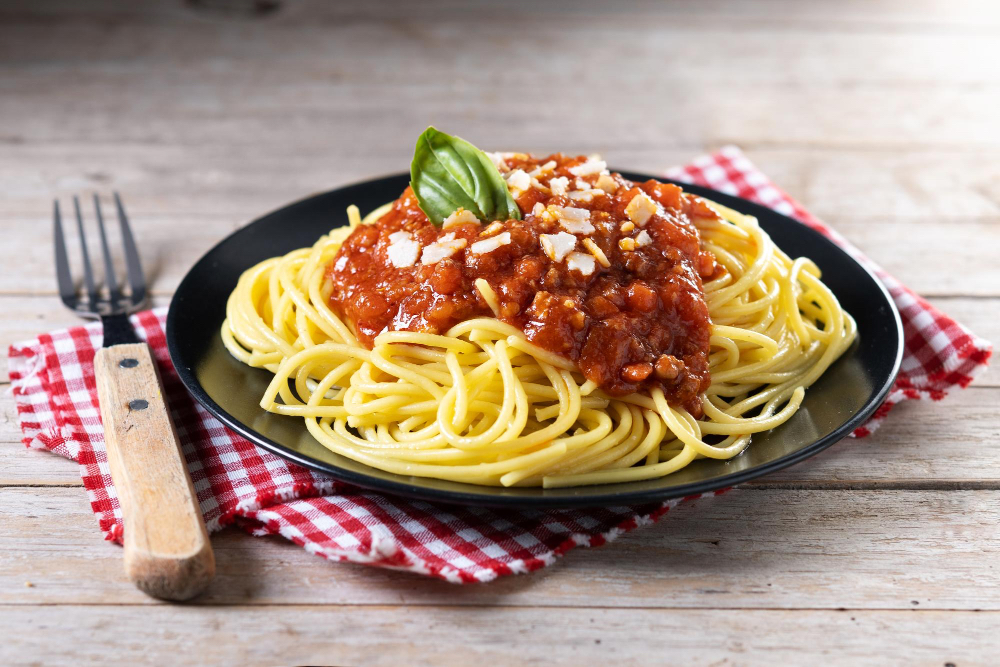

Home
Silly Spaghetti

Generously provided by www.freepik.com
Description
Spaghetti is a classic meal that every family should try! Make the italians in your life happy by making this!
Spaghetti is so easy to make that you might make this one every night! And it's so good, you'll want to eat it every night as well!!
Warning: The following recipe is fictional, intentionally silly, and should not be recreated!
Ingredients
- 132 noodles. No more, no less.
- 1 jar of spaghetti sauce of your choice
- 8 pounds of garlic bread (per person)
- A DVD copy of "The Godfather Part III" to set the mood
Steps
- Make a meatloaf
- Throw it away, because that's not what we're making!
- Wait. We could have just cut it up and used it as meatballs!
- Contemplate pulling the meatloaf out of the garbage.
- Bring a pot of water to a boil.
- Break apart all of the dry noodles multiple times, then throw them in the pot.
- Boil them until the look like noodles. Which they already did even before you put them in, so... bring them out immediately?
- These noodles will be very "al dente" and crunchy!
- Warm up the store bought spaghetti sauce you got in the microwave because you are not paid enough to care enough to use a "stove".
- Serve on a plate or a bowl. Maybe someone will get mad at you for using one or the other, but that does not matter. It's your spaghetti.
- Top with the meatballs we made earlier.